Start here
Welcome to Sunpride
This guide walks you through the Sunpride apps during testing: the web app for the office, and two phone apps for the field and the van. Each page shows the real screens, followed by the steps to get things done.
The three apps
Pick the app that matches your job. Your administrator decides which pages you can open, so you may see fewer pages than the guide describes.
sunpride.cauldnclark.com.
Start with Today →
F
Sunpride Field
The Android app for sales agents: the day’s stores, visits, orders, products, outlet census and offline work.
Read the Field guide →
V
Sunpride Van Sales
The Android point-of-sale app for van sellers: loading the truck, selling, receipts, cash and closing the trip.
Read the Van Sales guide →
When testing starts
Invitations start to go out Monday, 9 November 2026, by email. The web address stays the same for the whole testing period.
How to tell us what does not work
The web app has a Report an issue button at the top of every page, and the Van Sales app has one on its home screen. Describe what you did and what went wrong. The issue tracker page explains what makes a good report.
Start here
Sign in and install
You need an invitation email, one account, and (for the phone apps) the install folder link. You only do this once; after that you sign in as usual.
Sign in to the web app
- Watch for the invitation emailInvitations start on Monday, 9 November 2026. The email comes from the Sunpride team.
- Open the link in the emailIt takes you to the sign-in page at
sunpride.cauldnclark.com. - Choose Create accountUse the same email address the invitation was sent to. Choose a password of 8 to 128 characters.
- Sign inEnter your email and password on the sign-in page. Next time, go straight to the address and sign in.
- Check what you can seeYour role decides which pages open. The side menu only lists the pages you can use.
Install the phone apps
During testing, the Sunpride Field and Sunpride Van Sales apps are shared through a Google Drive folder called sunpride_apps. The link to that folder is sent to you in Messages. It is not on the Play Store.
- Open the link from MessagesTap the link on your phone and open the folder.
- Download the app you needField for sales agents, Van Sales for van sellers.
- Allow the install when Android asksAndroid may ask permission to install from this source. Allow it, then tap Install.
- Open the app and sign inUse the same email and password as the web app.
Updates
When a new version is ready, two things happen. You get a System message in Messages with the download link, and an Update available bar appears in the app.
- Install the new version over the current app, not after removing it.
- Your saved work stays on the phone. You do not need to sign out or sync first, but finish any open visit or sale before you install.
Your role
Your administrator sets a role for each person. Roles decide what you can open and change. If a page shows Access denied or says your role cannot open it, ask your administrator rather than trying again.
| Role | Typical use |
|---|---|
| Administrator | Full access, including Setup. |
| Sales manager | Team views: coverage, supervision and the team’s daily reports. |
| Operations | Office operations, as your administrator sets them up. |
| Approver | Approves the requests sent to them. |
| Sales | Field and van sellers. Works in the phone apps; the web app shows their own work. |
| Analyst or viewer | Reads the numbers and reports. A viewer has read-only access. |
Web app
Today
The first page after you sign in. It answers two questions: how are we doing right now, and what needs me?
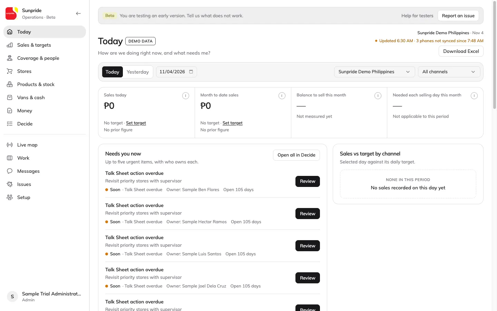
What the page shows
- Header. The date, when the figures were last updated, and how many phones have not synced recently.
- Filters. Pick a day or period (Today, Yesterday, and more), a company, area or branch, and a channel such as General trade or Key accounts.
- Headline figures. Sales today, month-to-date sales, what is still needed to reach the month’s target, and how much is needed each selling day.
- Needs you now. The most urgent items, with who owns each one. Open all of them in Decide.
- Sales vs target by channel. The selected day against its daily target, with the last 14 days in a table.
- Field right now. Each person’s status: No plan Not started In a call Done Idle, plus their last check-in, stops, productive calls and sales.
Common tasks
- Check the monthRead the month-to-date figure against its target. If it says “No target”, the target has not been set yet (see Sales & targets).
- Work the Needs you now listSelect Review on an item to see the evidence and the next action. Items marked Urgent come first.
- Find someone who has not startedIn Field right now, filter the table to Not started or No plan, then open the person to see their day.
- Save the numbersChoose Download Excel at the top right to take the table into a spreadsheet.
Web app
Sales & targets
Are we on target, and where are we behind? This page shows sales against target for any period, and drills down from the whole company to a single seller.
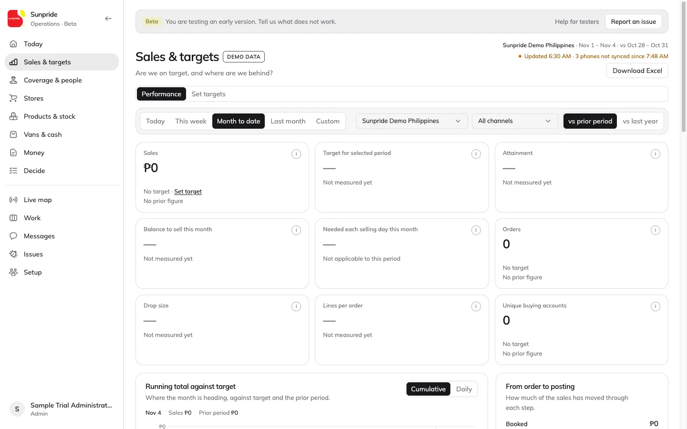
What the page shows
- Period tabs. Today, This week, Month to date, Last month, or a custom range. Compare against the prior period or last year.
- Headline figures. Sales, the target for the period, attainment, what is still needed this month, and the amount needed each selling day.
- Order figures. Orders, drop size, lines per order and the number of unique buying accounts.
- Running total. Cumulative sales against target through the month, with the prior period alongside.
- From order to posting. How much of the sales is booked, approved (passed the credit and price checks) and posted (sent on to SAP).
- Sales by territory. The rows behind first. Group by channel, territory, agent, category, product or store.
- Primary versus secondary. Shipments to distributors against retailer offtake. This section is marked as sample data until real source data is connected.
Set a target
- Open the Set targets tabIt sits above the figures at the top of the page.
- Choose the period and who the target is forEnter the goal for each.
- SaveThe page refreshes. Targets appear against the figures straight away.
Web app
Coverage & people
Did my people do the plan? This is where you check planned calls, the team’s day, and the daily reports that come from the field.
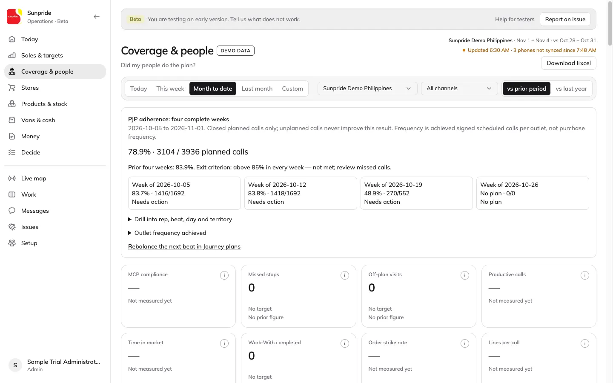
What the page shows
- Plan adherence. Planned calls closed, by week, over the last four weeks. Unplanned calls never raise this figure.
- Coverage measures. Missed stops, off-plan visits, productive calls, time in market, order strike rate, lines per call, and how many stores are covered and billed.
- Distribution measures. Numeric and weighted distribution and on-shelf availability, where the data is set up.
The pages in this group
Use the tabs across the top of the Work pages to move between them. Each one is listed below.
| Page | Use it to |
|---|---|
| Coverage plans | See who has submitted, approved or started a monthly plan, and approve them. |
| Call sheets | Open one account’s monthly call sheet, by name or outlet code. |
| Supervision | See the team’s day, what is overdue and who has not sent a daily activity report. |
| DSR | Read one seller’s daily sales report, or the whole team’s. |
| DAR / ROAR | Read a daily activity report, and see which team submissions are missing. |
Coverage plans
A coverage plan is each person’s monthly route of stores and calls. The page shows the month’s commitments: how many people are ready, and who still needs a plan.
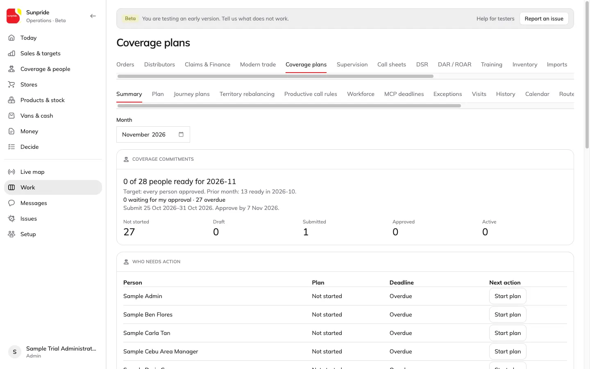
- Check who needs actionThe “Who needs action” table lists each person with their plan status, deadline and the next action, such as Start plan.
- Approve a submitted planOpen the person’s plan. Check the calls and the stores, then approve it before the deadline shown.
- Adjust the next beatJourney plans and territory rebalancing are in the same Work menu, if you need to move stores between people.
Supervision
Supervision is the team’s day in one table: planned, visited and productive calls today, the week against the prior week, work-with sessions, open actions, per diem and whether the daily activity report is in.
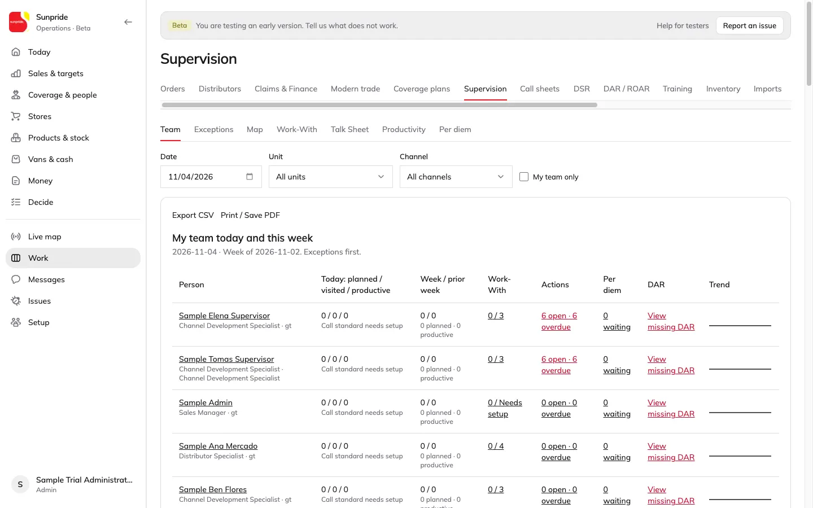
- Use the Date, Unit and Channel filters to narrow the team.
- Tick My team only to hide people outside your reporting line.
- Choose Export CSV to take the table into a spreadsheet, or Print / Save PDF to keep a copy.
Call sheets
- Pick an accountSearch by name, or type the outlet code.
- Read the monthThe sheet lists each visit planned for the month. Use Previous and Next to move through the list of accounts.
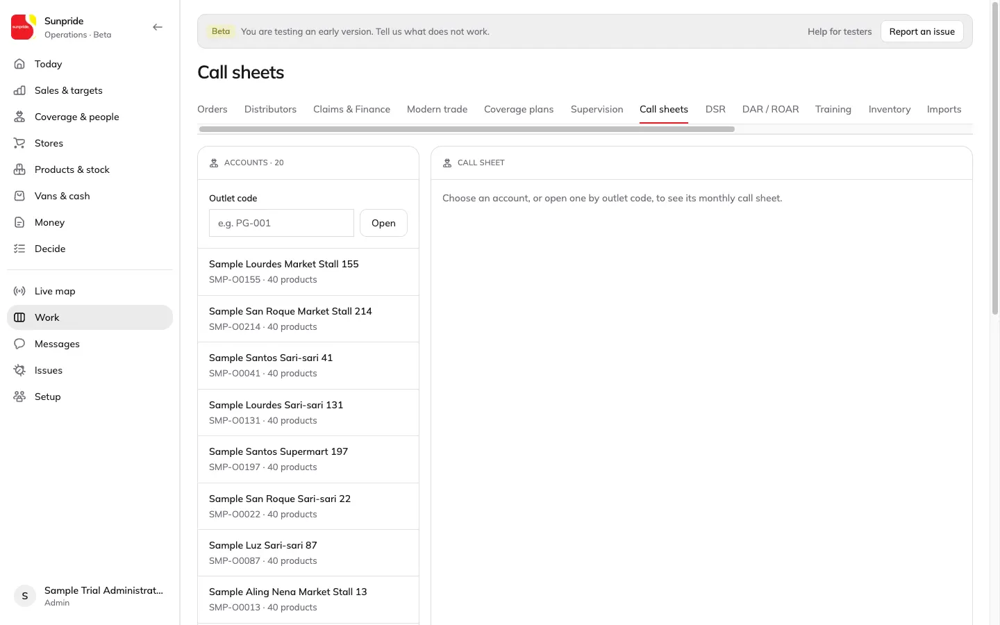
DSR: daily sales report
Choose a date and a salesman to see that person’s daily sales report. Choose Whole team to see everyone for the day.
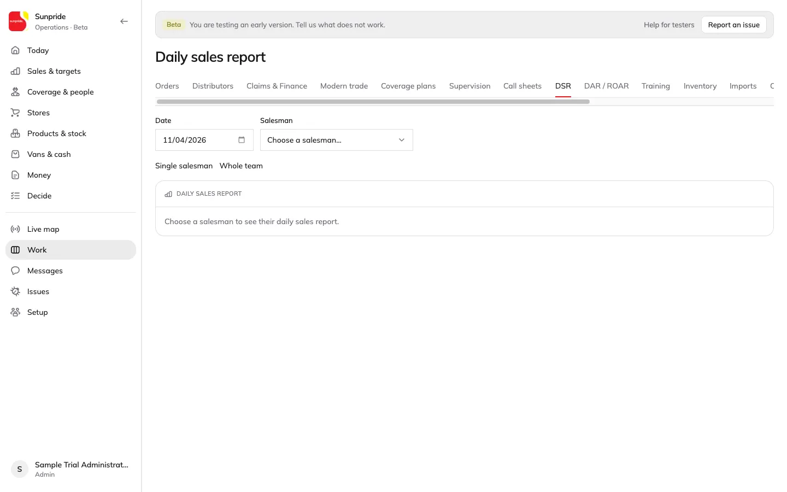
DAR / ROAR: daily activity report
Each seller’s daily activity report is due at 10 PM. The page has two tabs:
- My DAR shows your own report for the chosen day: calls, productive calls, stores not visited, work-with sessions and whether the report is submitted.
- Team submissions shows who has submitted and who has not.
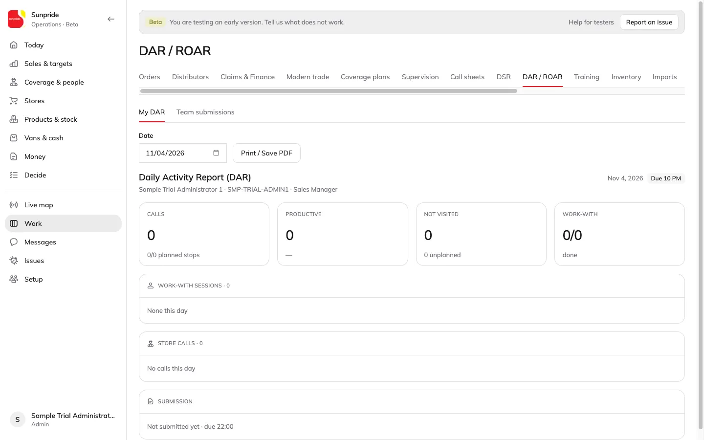
Web app
Stores
Where is distribution weak? This page shows every store, whether it is buying, and what has changed since the prior period.
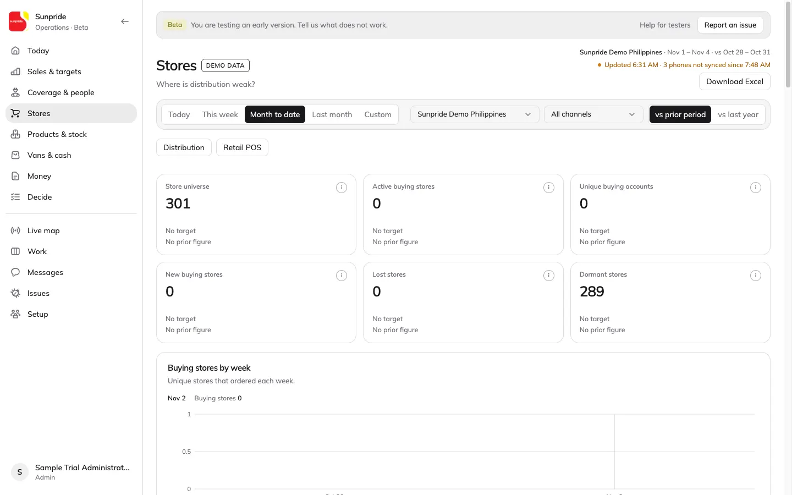
What the page shows
- Distribution figures. The store universe, active buying stores, unique buying accounts, new and lost stores, and dormant stores.
- Buying stores by week. How many different stores ordered each week.
- Store list. Filter to All, Buying, Dormant, New, Lost or Never bought. Each row shows the status, sales, change against the prior period, when the store last ordered and was last visited, products bought, gaps and open balance.
Find a store that has gone quiet
- Filter to DormantPick the period first, then choose Dormant.
- Look at the Last order columnIt shows how long each store has been quiet.
- Open the storeClick the row for everything about the store: its visits, orders and balance.
Web app
Products & stock
Is the right stock in the right place? This page shows what is on hand, where it is, and how many days it will last.
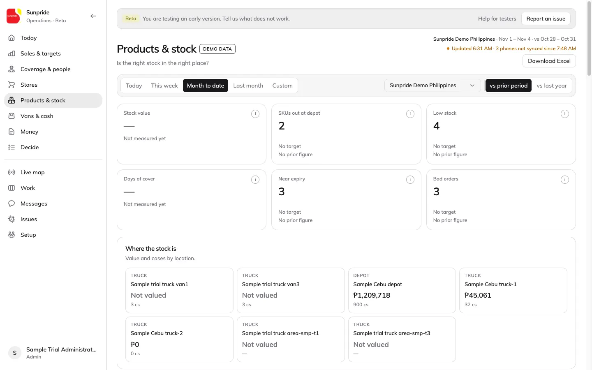
What the page shows
- Figures. Stock value, SKUs out at the depot, low stock, days of cover, near-expiry stock and bad orders.
- Where the stock is. Each depot and truck, with its value and cases. Trucks without a valuation show Not valued.
- Every product. On hand, value, how many a day sell, days of cover, stocking and buying reach, and a status. A product marked Watch needs a look; On track needs nothing.
Check one product
- SearchUse the product table. Stock exceptions are listed first.
- Read the coverDays of cover tells you when the product runs out at the current sales rate.
- Find the stockCheck the location list to see whether the stock is at the depot or on a truck.
Web app
Vans & cash
Is every truck’s stock and money accounted for? This page follows each van trip from loading to the cash handed in.
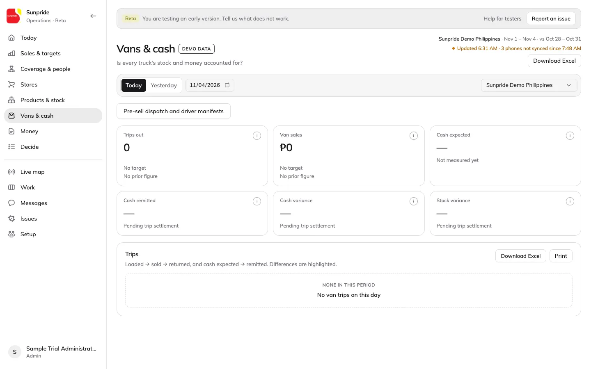
What the page shows
- Figures. Trips out, van sales, cash expected, cash remitted, cash variance and stock variance.
- Trips table. Each trip, loaded, sold and returned, with cash expected against cash remitted. Differences are highlighted.
Check a trip that does not balance
- Find the highlighted tripDifferences are shown in colour.
- Compare the stockSet the stock loaded, sold, returned and counted at close side by side.
- Compare the cashExpected cash against cash remitted. Until the trip is settled, the figure shows as Pending trip settlement.
Web app
Money
Are we collecting? This page shows what customers owe, how old it is, and the money captured on the vans.
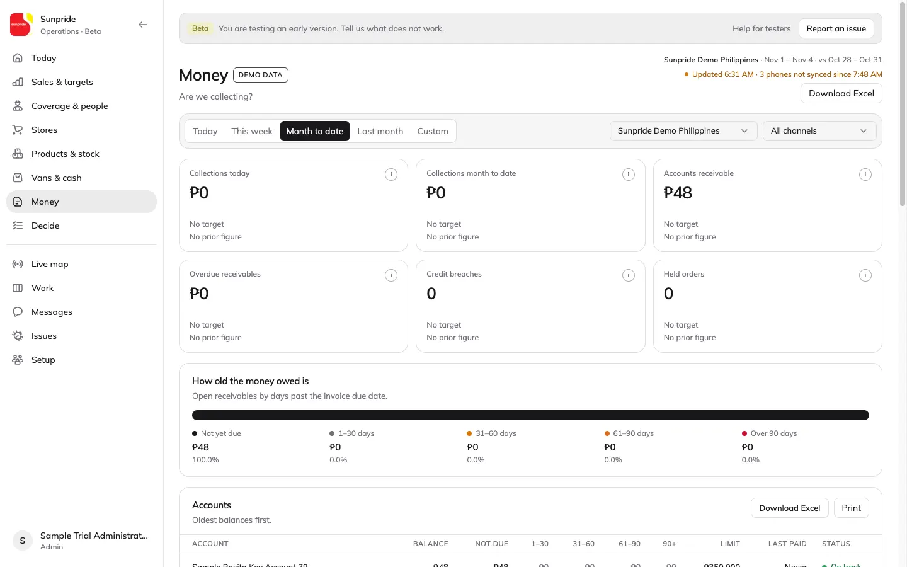
What the page shows
- Figures. Collections today and this month, accounts receivable, overdue receivables, credit breaches and held orders.
- How old the money owed is. Open balances by days past the due date: not yet due, 1–30, 31–60, 61–90 and over 90.
- Accounts. The oldest balances first, with the credit limit, the last payment and a status.
- Van money by tender. Cash and on-account amounts captured on the vans. These are captured amounts, not bank-cleared money. Non-cash items need separate confirmation.
Web app
Decide
What do I need to decide? Everything waiting for a decision, most urgent first.
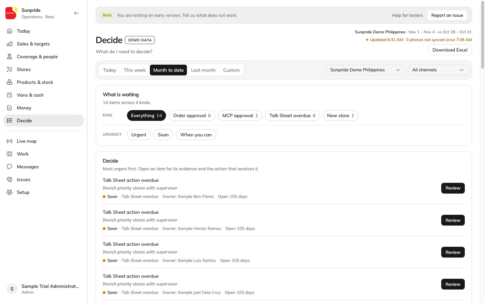
The kinds of item
| Kind | What you decide |
|---|---|
| Order approval | An order that is waiting to be approved or held. |
| MCP approval | A signed monthly commitment for a person’s coverage plan. |
| Talk Sheet overdue | An action agreed with a store that is past its date. |
| New store | A new outlet waiting to be added to the approved list. |
Decide an item
- Start with UrgentItems are marked Urgent, Soon or When you can.
- Select ReviewRead the evidence and the action that resolves the item. For an order, check the customer’s credit and the prices first.
- Choose the action the item asks forThen the item is decided.
Web app · Work
Orders
Move booked orders forward. Approval holds and missing prices come first.
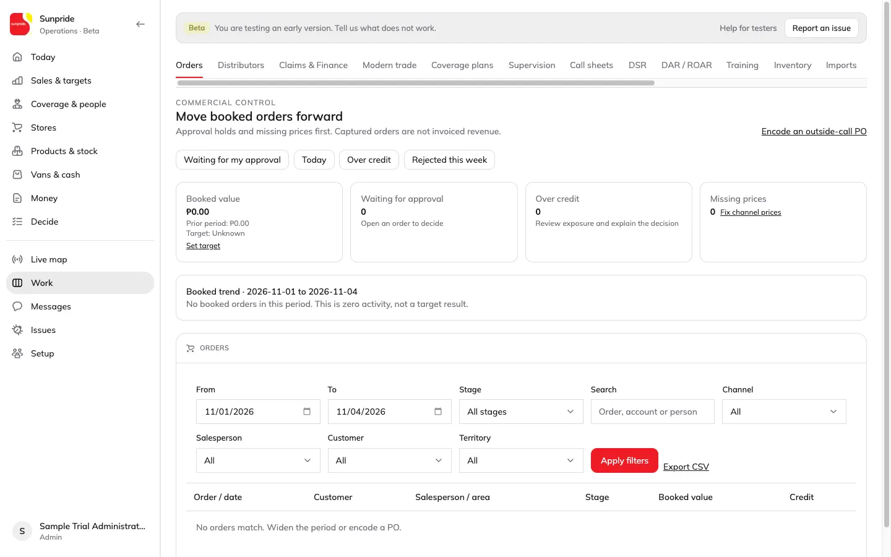
Stages
Each order moves through these stages. Use the Stage filter to see one at a time.
Draft Booked Approved Posted Fulfilled Rejected Voided
Clear the approval queue
- Filter to BookedThese are the orders waiting for a decision.
- Fix missing prices firstA missing price is unknown, not free. Set the price in Master data & prices, then approve.
- Check the customerOpen the order to see credit exposure. Over-credit orders are highlighted.
- Approve or rejectDecide the order from its review page.
Web app · Work
Other work pages
The Work menu holds more pages than the ones in this guide. Each one follows the same pattern: a question at the top, figures, and a list that puts exceptions first.
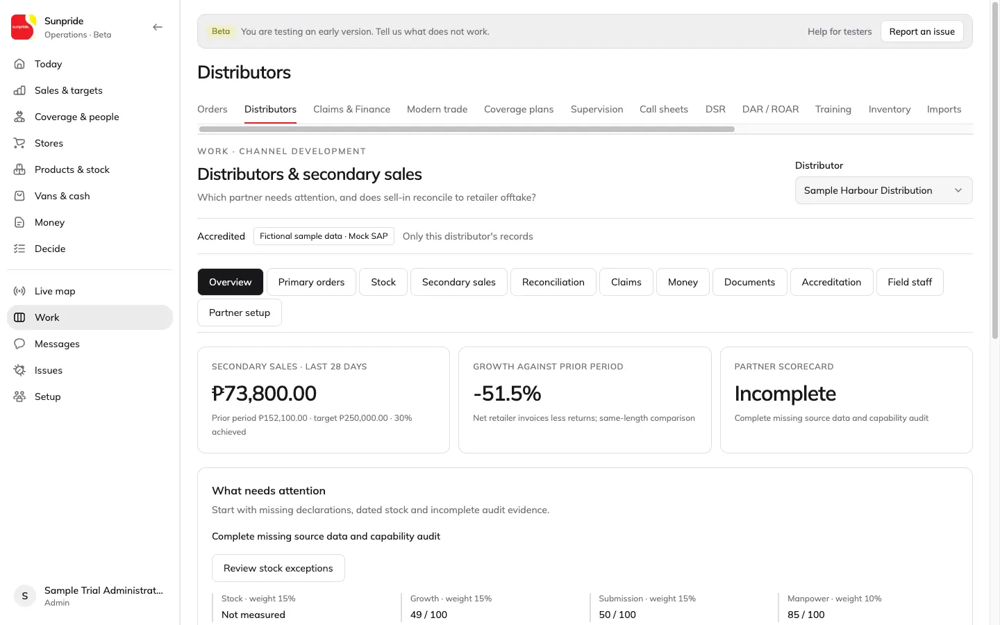
| Page | What it is for |
|---|---|
| Distributors | Each distributor’s primary orders, stock, secondary sales, claims, documents and a partner scorecard. |
| Claims & Finance | Trade-spend claims: what needs evidence, what is ready for approval, and what SAP has settled. A claim is not complete until the SAP acknowledgement arrives. |
| Modern trade | Purchase orders from retail chains. Upload a CSV, a structured email or a scan; scans need a manual check. Review exceptions before confirming. |
| Approvals | Requests waiting for an approver. Open to approver roles; if you cannot open it, ask your administrator. |
| Training | Training records for the team. |
| Inventory | Stock movements and counts for each location. |
| Imports | Loading the first set of data, such as customers, routes, products, prices and stock. See Master data & prices. |
| Outside-call POs | Purchase orders taken on outside calls. |
| Van trips | Each van trip from loading to close. |
| Retail execution | Shelf and in-store checks by the field team. |
| Agency work & billing | Work done by agencies and what is billed for it. |
Phone apps
Sunpride Field
The app a sales agent carries through the day. It works offline: you plan the day, visit stores, take orders and capture new outlets, and everything waits safely on the phone until it can be sent.
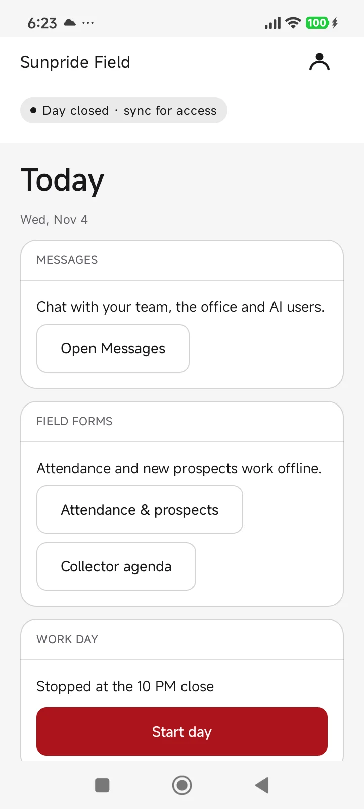
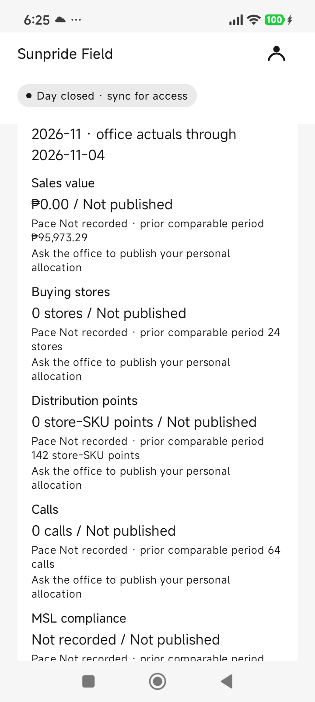
Your day, step by step
- Sign inUse your email and password. If the phone is not recognised, ask your administrator to add it.
- Start your dayTap Start day in the Work day card. Location sharing starts with it and runs until your day ends at the 10 PM close.
- Check your stopsUnder Visits you see today’s stores, in the order planned. Open the next one from the list.
- Visit and check inAt the store, check in. The app records where you are. If the check-in is refused, turn off any fake-location app and try again.
- Record the visitChoose the outcome (completed, productive or not productive, with a reason), add photos, activities and any notes. Finish the call before you open the next store.
- Take an orderOpen a new order from the visit. Search the store’s products by name, code or barcode, and review before you send.
- End your dayTap End day in the Work day card. Location sharing stops and you can review what is still waiting.
Home screen
| Card | What it does |
|---|---|
| Messages | Opens your conversations with the office, your team and AI users. |
| Field forms | Attendance and new prospects. Works offline. |
| Work day | Start day and End day, and the close time. |
| Products | The product catalogue. Search, scan and read saved product details offline. |
| Outlet universe | Capture a new store with its GPS point and a storefront photo, offline. |
| Customers | Your saved outlets. Search by name, code or address. |
| Visits | Today’s visits, with a count. |
| Sales | Your targets and what you have sold, for today and the month. |
Attendance, prospects and the collector agenda
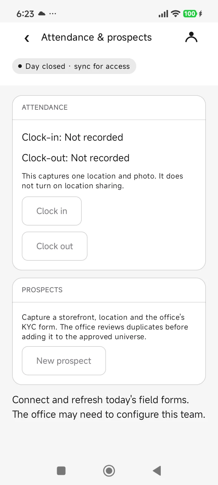
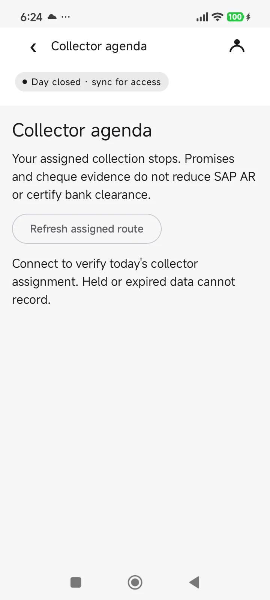
- Clock in and clock out capture one location and one photo. They do not start location sharing.
- Prospects capture a storefront, its location and the office’s KYC form. The office reviews duplicates before a prospect joins the approved list.
- Collector agenda lists your assigned collection stops. Refresh the route when you have a signal. Recording a promise or a cheque here does not reduce the balance in SAP or confirm that money has cleared.
Outlet census
Use the census to add a store that is not yet in the system. Connect once to download your census batch, then capture offline: store name, address, owner, channel, GPS and a storefront photo. The office checks it before it is added.
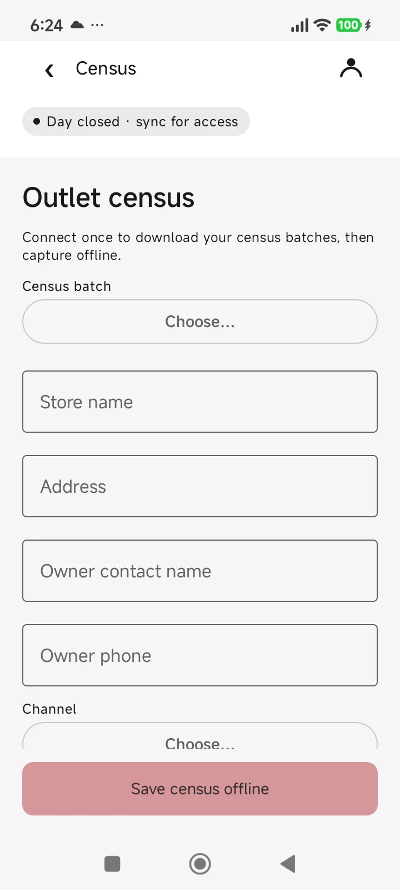
Products and customers
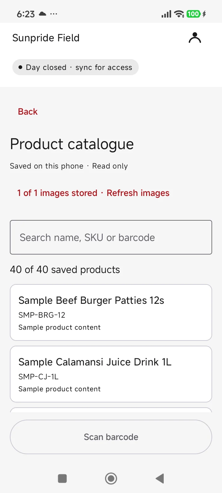
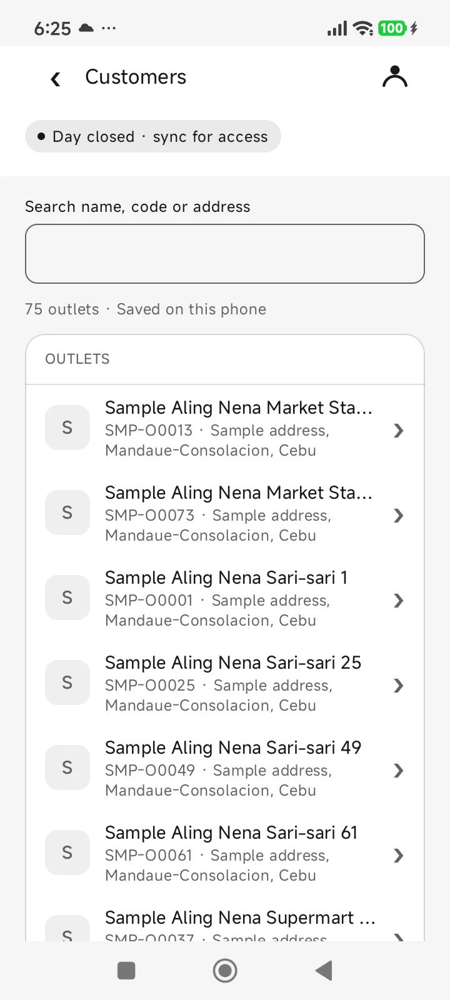
Messages
The Messages card on Home opens your conversations. Direct messages, groups and channels work as they do on the web. See Messages for mentions and tags.
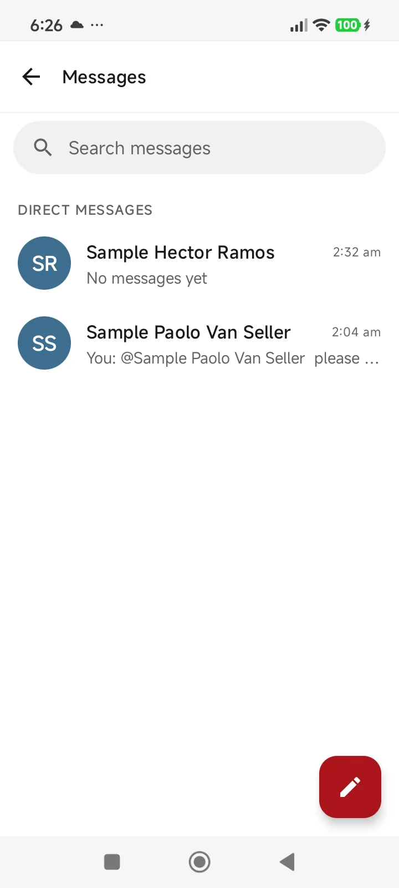
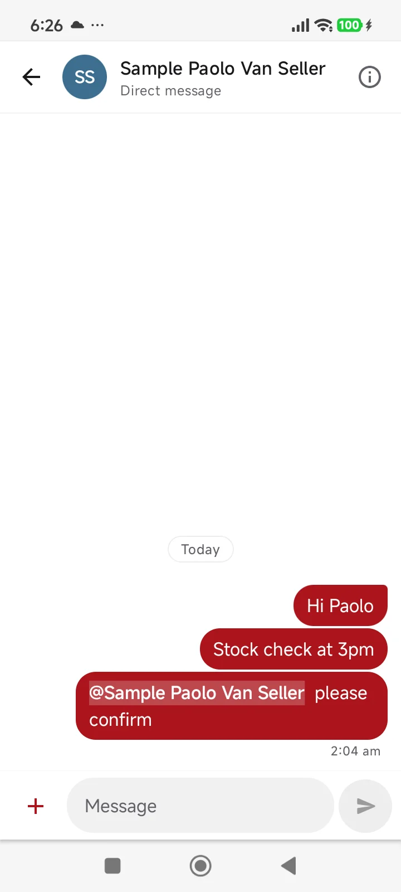
Sync and offline work
Everything you record is saved on the phone first. The Sync screen tells you what is still waiting, when the last sync happened, and whether the office has your day.
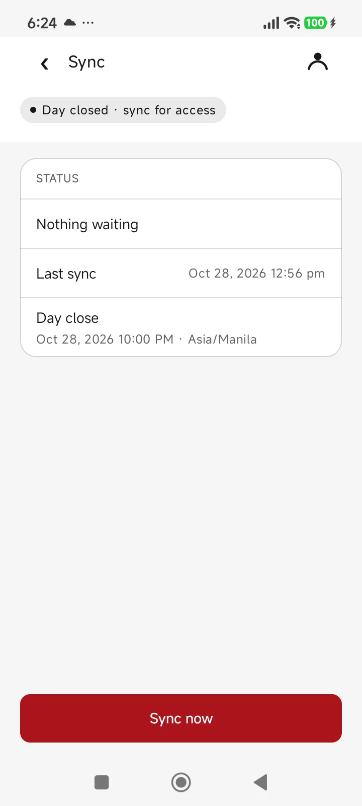
- The home screen shows the state in the pill at the top: Day closed · sync for access means you need to sync before you can use the day’s work.
- Sync before 10 PM so the office receives your day. Connect to a signal and tap Sync now.
- Never remove the app or clear its data while work is waiting. Your saved work would be lost.
Account and updates
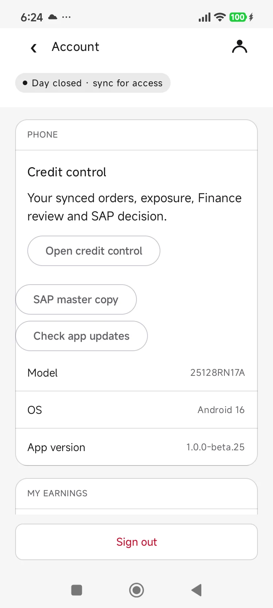
Use Check app updates to look for a new version. Install it over the current app. Choose Sign out only at the end of your testing, because it signs you out on this phone.
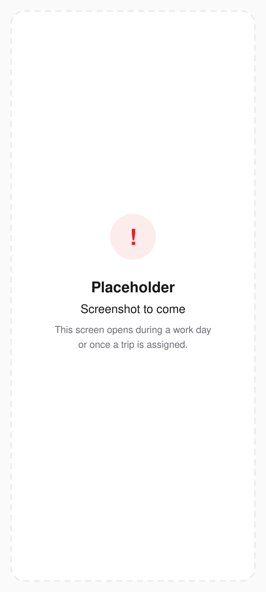
Phone apps
Sunpride Van Sales
The point-of-sale app for van sellers. You start the trip with the truck’s load, sell from the van, print receipts, count the cash, and close the trip. Everything is saved on the phone until it is sent to the office.
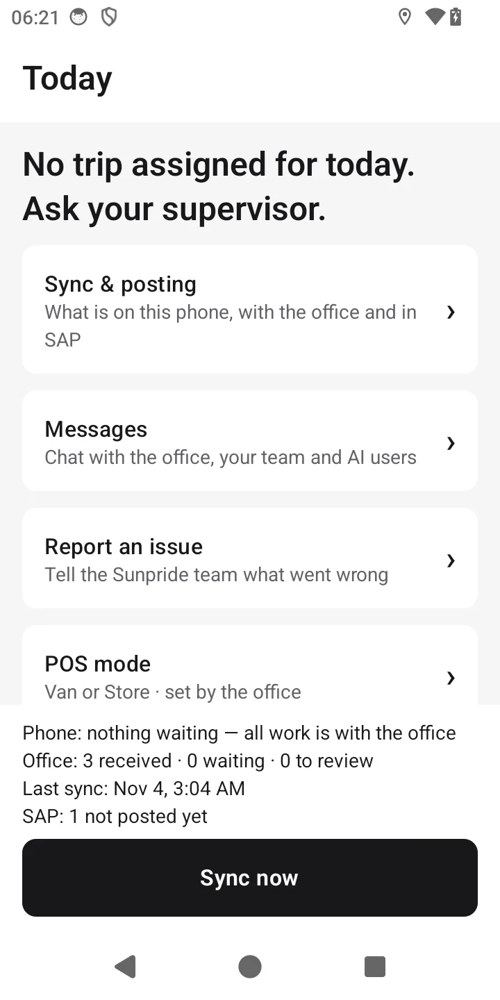
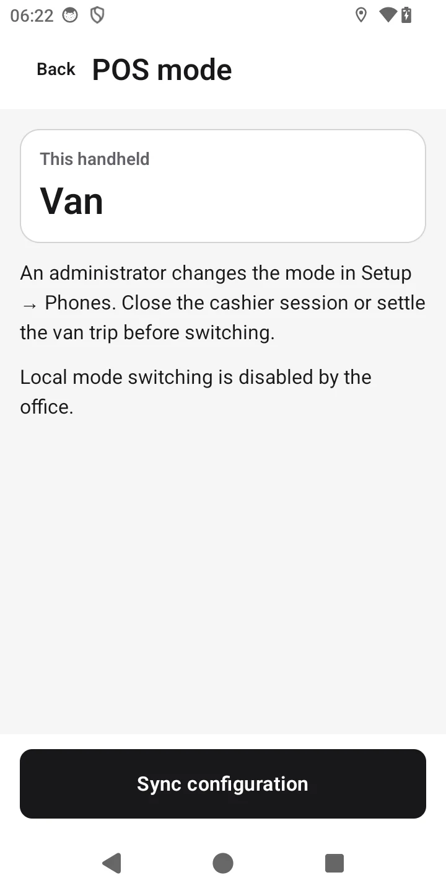
A trip, step by step
- Check the handheldYour supervisor adds the phone the first time. Sign in with your email and password. If the phone says it is not recognised, ask your supervisor to re-add it; your saved work is not deleted.
- Start the trip and enter the odometerType the starting odometer in kilometres. It is required.
- Confirm the loadCheck what is on the truck against the load sheet. Scan each product’s barcode to count it, or count by hand and tell the office about any difference.
- Open the cashier sessionEnter the opening float. Sales can only be made with an open session.
- SellChoose the customer, then add products. Scan a barcode or search the product name. Use the discount only with the manager’s PIN.
- Take payment and print the receiptEnter the cash received; the app works out the change. Print the receipt, or a copy if the customer needs one.
- Cancel a sale if neededUse Cancel sale for a sale you do not want to complete. A void prints a void slip.
- Return to the office at the endCount the stock on the truck, count the cash in a blind count, enter the closing odometer and close the trip.
Selling
Each sale starts with a customer. Then add the products they are buying, with the quantity and the selling unit. The total shows at the bottom before you take payment.
- Find a product by name, or scan its barcode with the phone camera or a scanner.
- Prices come from the office. A price exception needs the manager’s PIN.
- Payment can be cash, or on account for customers who have an account.
- Phone lookup finds a customer by phone number, if the customer has a loyalty account.
Cash and closing
- Blind cash count. Count the bills and coins from today’s sales, not your change fund. You enter the total without seeing the expected cash.
- Cash deposit. Record what you hand to the cashier.
- Stock count. Count what is on the truck. Give a reason for any difference from what the system expects.
Printing and scanning
Use Printer & scanner to pair a Bluetooth printer. Use Check the printer and paper before a busy route. If the printer is not ready, the receipt waits and is printed later from the receipts list.
Sync and posting
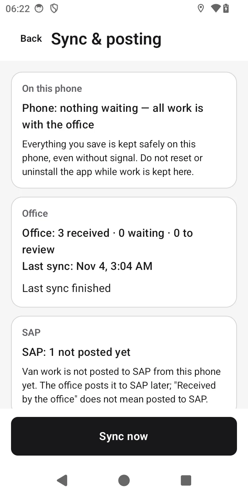
- On this phone shows what has not yet reached the office.
- Office shows what the office has received, and whether the last sync finished.
- SAP shows what is not yet posted to SAP. Received by the office does not mean posted to SAP.
Messages and reporting an issue
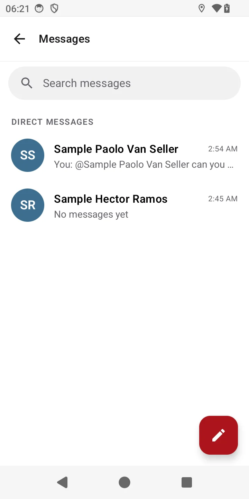
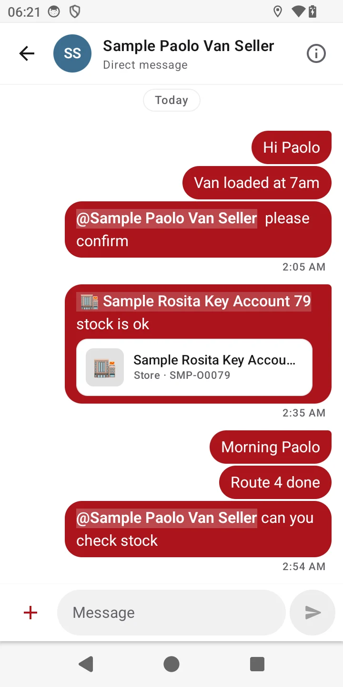
Report an issue opens the Sunpride issue form in the phone’s browser. Describe what you did, what happened and what you expected, and attach a screenshot. See Issue tracker.
Together
Live map
Where is everyone right now? The map shows the agents and trucks that are sharing their location, what they are doing, and whether they have checked in.
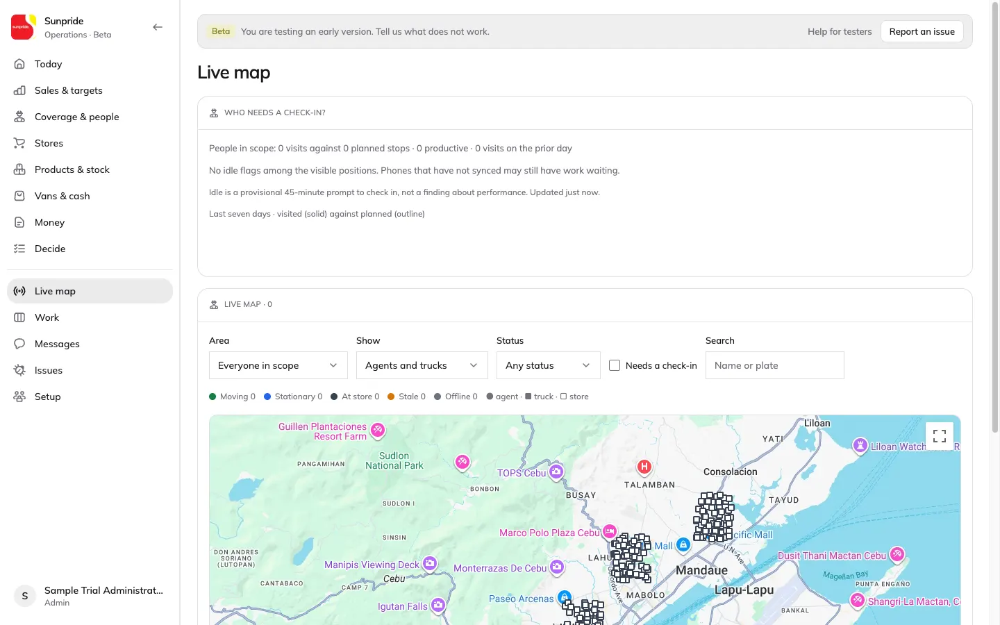
When location is shared
Location is shared only during a work day. It starts with Start day or the first check-in and stops when the day ends at the 10 PM close. A truck’s location is shared while its trip is active. If someone turns location off, the map shows them as location off.
Reading the map
- Area. Everyone in scope, or one area or branch.
- Show. Agents, trucks, or both.
- Status. Moving, Stationary, At store, Stale (no recent update) or Offline. Tick Needs a check-in to see people who have not checked in.
- Search. A name or a plate number.
- Legend. A circle is an agent, a filled square is a truck, and an outlined square is a store.
The top card summarises the day: visits against planned stops, productive calls, and visits on the prior day. “Idle” is a 45-minute prompt to check in. It is not a finding about performance.
See one person’s day
- Pick a person or a truckSelect it in the list or on the map.
- Read the day trailThe route travelled, the store visits and the times they happened.
- Check the gapsA long gap with no movement, or a planned store with no visit, is the thing to ask about.
Together
Messages
Talk with colleagues, start a group, and point to the right thing by tagging a store, a product, an order or an issue. Messages work the same way on the web and both phone apps.
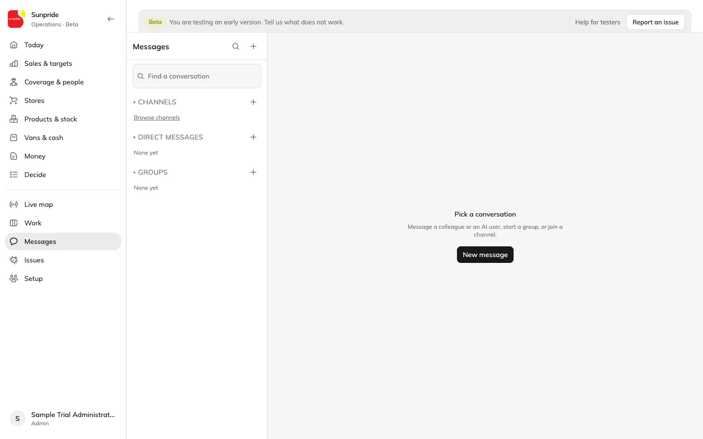
Conversations
- Direct messages are one-to-one. Use New message to start one.
- Groups are for a small set of people. Choose New group and pick the people.
- Channels are open to anyone who joins. Use Browse channels and choose Join.
Mention and tag
Type @ to mention a person. Type # to tag an item. A tag shows a small preview card, so the reader can see the store or order without leaving the chat.
| Type # then | Tags |
|---|---|
| Outlet | A store. |
| Product | A product. |
| Customer | A customer. |
| Order | An order. |
| Visit | A store visit. |
| Issue | An issue in the tracker. |
| Territory or route | An area or a route. |
| Van trip | A van trip. |
Photos, documents and links
Choose Attach or tag (the + button) to add a photo, a document or a link. Use this for a shelf photo, a delivery note or a price list you want the team to see.
On the phones
Open Messages from the Field home screen or the Van Sales home screen. Search, open a conversation, and use the same @ and # tags. Use Conversation details to see who is in a group.
System messages
Messages from the Sunpride team about the apps appear as System messages. Updates arrive this way, with the download link. Read them, because they tell you what has changed.
Together
Issue tracker
Found something that does not work? File it here. A good report gets fixed the first time, and every report is followed until it is done.
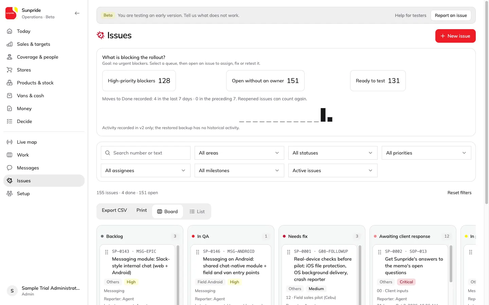
Who files issues
A small, named group of testers from Sunpride files issues. If you are not sure whether you should, ask your administrator. On the web, file from the Report an issue button at the top of any page; on the Van Sales app, use the Report an issue row on the home screen.
How to file a good issue
A good report answers four questions. Write them in the boxes on the form.
- What did you do?The steps, one per line. Start from the page you were on, for example “Opened Orders, filtered to Booked, tapped Approve.”
- What did you expect?In a sentence. “I expected the order to move to Approved.”
- What actually happened?Say what you saw, including any message on the screen. Copy the exact words if you can.
- Attach a screenshotUp to five files. Images up to 10 MB each. Add a short note if the screenshot needs explaining.
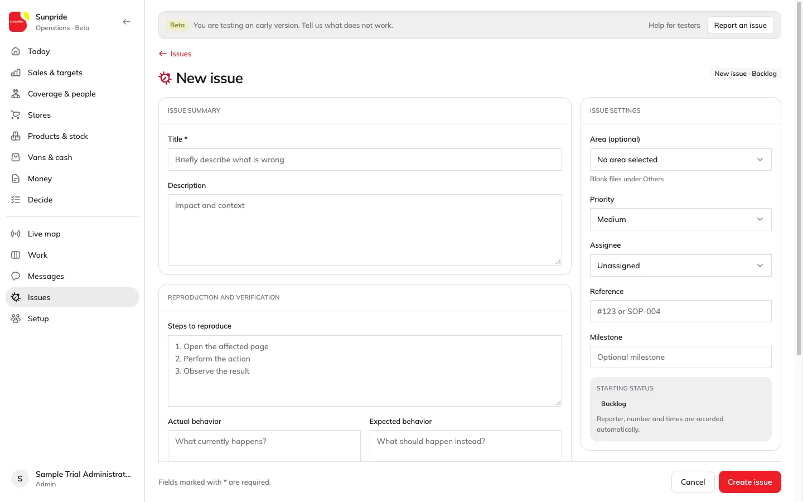
What the statuses mean
| Status | What it means |
|---|---|
| Backlog | Filed and waiting to be picked up. |
| In progress | Someone is working on it. |
| In QA | Being checked. |
| Needs fix | Something still needs changing. |
| Awaiting client response | We need an answer from you. Reply in the comments. |
| Ready for retest | A fix is published. Please test it and tell us the result. |
| Done | Confirmed fixed. |
Retest a fix
- Open issues in Ready for retestFilter the board to that status.
- Try the same steps againUse the steps from the original report, on the same kind of phone or browser.
- Mark it Done if it worksChoose Done on the issue.
- Comment if it is still brokenAdd a comment saying what you saw this time.
Follow an issue
Open any issue to see its status, its owner, the comments and the attachments. Add a comment or another screenshot at any time. The top of the board shows the high-priority blockers and any issue with no owner.
Setup
Setup: people and invitations
For administrators. This is where you invite people, set their roles, and manage the phones they sign in on. Setup is only visible to administrators.
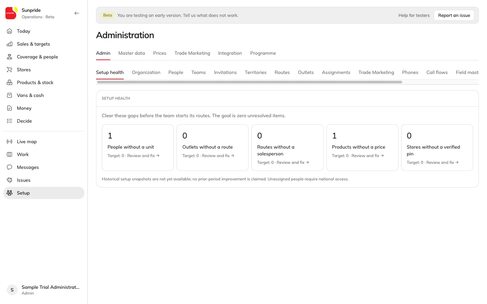
Setup health
Setup health lists the gaps that would stop the team from working: people without a unit, outlets without a route, routes without a salesperson, products without a price, and stores without a verified location. The goal is zero in every line. Select Review and fix to go to the item.
Invite someone
- Open PeopleSearch first: the person may already be on the list.
- Click Add personFull name, email, role, position and unit. Use the work email the person will sign up with.
- SaveChoose Save. The page confirms the person was added.
- Check the person signs upThey follow the steps on Sign in and install.
Roles
Each person has one role. Choose the role that matches the job; the role decides which pages they can open and what they can change. The list is shown in the Role field of Add person. A super administrator is shown as Super admin.
Pick the Invited filter on People and use Remove to stop their access.
Phones
Every phone that signs in is listed under Phones. For each phone you can see its status, the person it belongs to, when it last signed in and its visit activity.
- Suspend phone stops the phone for now. You can bring it back with Reinstate phone.
- Revoke phone removes the phone’s access. Choose the reason: for example, Replaced by a new phone, Stolen, Suspected compromise, or Employee transferred. A revoked phone must be added again before it can sign in.
Organisation, territories and routes
The rest of the Setup page holds the structure behind the numbers: the organisation, people’s teams, territories, routes, outlets and assignments. Changes here affect the numbers on every page, so check with the Sunpride team first.
| Section | What it holds |
|---|---|
| Organization, People, Teams | Units, people and their teams. |
| People › Invited | People added and whether they have signed in. |
| Territories, Routes, Outlets, Assignments | Where stores are and who visits them. |
| Trade Marketing | Trade marketing setup. |
| Phones, Call flows | Phones that sign in, and the set-up for each kind of call. |
| Field masters, Fiscal & authority, Fleet & integrity | Reference lists, fiscal and approval settings, and fleet and integrity checks. |
Setup
Setup: master data and prices
For administrators. The products, customers, stores and prices the team sells with. Nothing sells correctly until these are right.
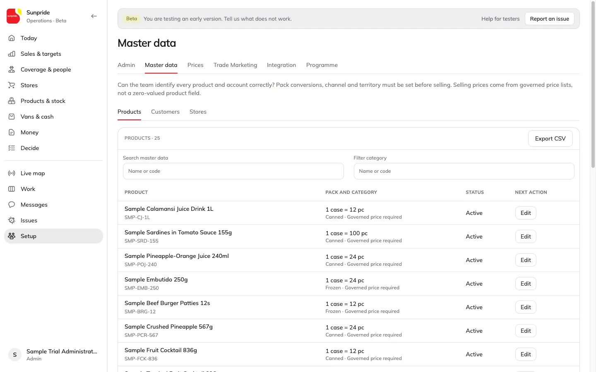
Products, customers and stores
Each product needs its name, code, pack size (for example, 1 case = 12 pieces) and category. A product marked Governed price required still needs a price from a price list.
- Open Master dataChoose Products, Customers or Stores.
- Search or filterUse the search box, or filter by category.
- Fix the next actionOpen the row to edit it. Export the list with Export CSV to check it in a spreadsheet.
Prices
Prices are set by channel: General trade, Public market, Supermarkets, Key accounts and the distributors. Each price list has a start date, so a new price takes effect on the day you choose.
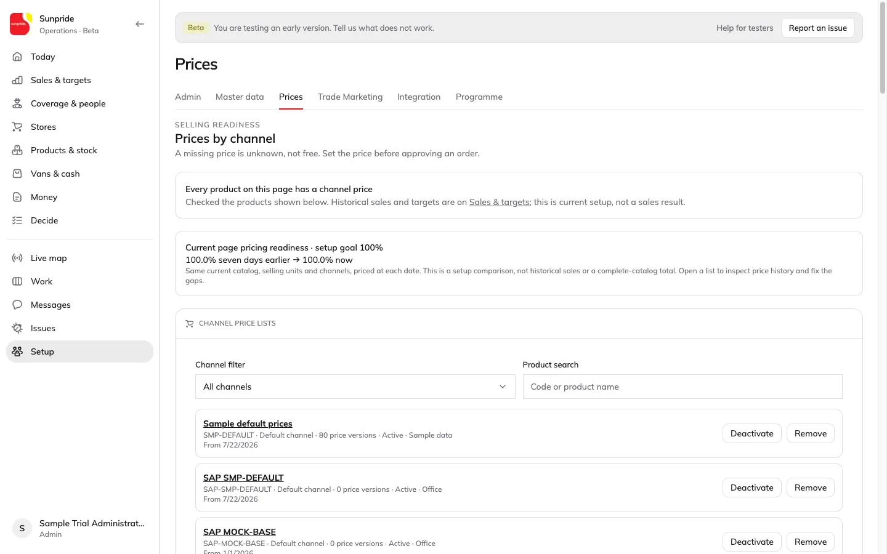
Imports
Use Imports to load the first set of data in bulk: customers, the outlet list, routes, the open receivables, products, prices, opening stock, a stock count, adjustments, route plans and sales targets. Each file is checked first.
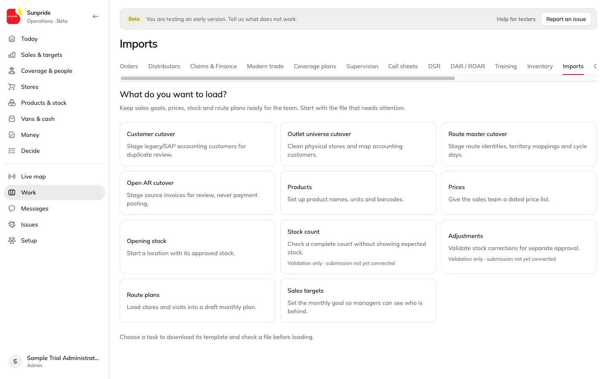
- Choose what to loadStart with the file that needs attention.
- Check the validationRead any warnings before you continue.
- SubmitWhere submission is connected, confirm to load the data. Where it says validation only, the file is checked and nothing is saved yet.
Integration and Programme
Integration shows what has been sent to SAP and what is stuck: records that failed, are waiting in the queue, or need a decision. SAP stays the financial record. Only administrators should act on a failed record, and the fix is made at the source, not by retyping the document.
Programme is the Phase 1 tracker: which agreed features are built, partly built, being changed, or not built yet, and which ones wait on a decision from Sunpride.